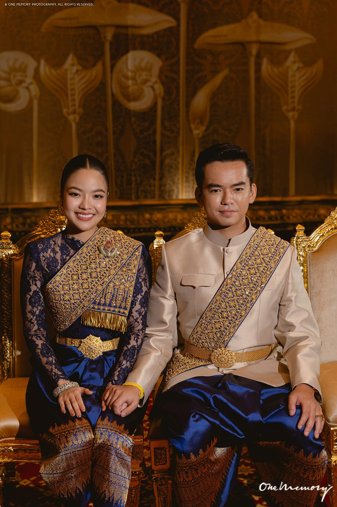

Why Clothing Is Important
Traditional clothing in Cambodia is used for ceremonies, daily life, and special events. The styles and fabrics show respect, beauty, and cultural identity.

The table below gives a simple overview of some clothing types, when people wear them, and what they represent.
| Clothing Name | When It Is Worn | Meaning or Purpose |
|---|---|---|
| Sampot | Formal events, traditional ceremonies | National garment that shows respect and elegance. |
| Krama | Everyday use by men and women | Multi-purpose scarf used for work, shade, and style. |
| Wedding Dress | Weddings and engagement ceremonies | Colorful outfits that celebrate love and family traditions. |
Many families still keep these clothing traditions, especially during holidays and family gatherings.